전자산업기사 (2015-09-19 기출문제)
1과목: 전자회로
1. 다음 논리회로와 등가인 논리 게이트는?
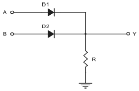
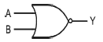
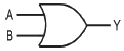
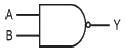
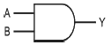
(정답률: 83%)

2. 직렬 전압 귀환증폭기의 특징에 대한 설명으로 틀린 것은?
- 전압 이득이 감소한다.
- 출력 임피던스가 증가한다.
- 비직선 일그러짐이 감소한다.
- 주파수 대역폭이 증가한다.
(정답률: 82%)
3. P형 반도체를 만들려면 순수한 반도체에 어느 것을 사용해야 하는가?
- 억셉터(acceptor)원소
- 도너(donor)원소
- 규소(Si)원소
- 5가 불순물
(정답률: 80%)
4. 다음 회로에서 V0에 대한 설명으로 옳은 것은? (단, 이상적인 연산증폭기이다.)
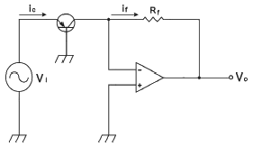
- 출력 V0는 입력 Vi의 대수 함수에 비례한다.
- 출력 V0는 입력 Vi의 지수 함수에 비례한다.
- 출력 V0는 입력 Vi에 비례한다.
- 출력 V0는 입력 Vi의 제곱에 비례한다.
(정답률: 70%)
5. 정현파 입력에 의하여 구형파의 출력 파형을 얻는 회로는?
- 적분 회로
- 부트스트랩 회로
- 밀러 적분회로
- 슈미트 트리거회로
(정답률: 90%)
6. 이미터 폴로어의 특징에 대한 설명으로 틀린 것은?
- 전류 이득이 크다.
- 전압 이득은 1에 가깝다.
- 완충 증폭기로 주로 사용된다.
- 입력 임피던스는 낮고, 출력 임피던스는 크다.
(정답률: 74%)
7. 귀환증폭기에 대한 설명으로 옳은 것은?
- 부귀환은 증폭회로에 정귀환은 발진회로에 응용된다.
- 부귀환의 경우 입력신호와 귀환신호의 위상은 같다.
- 부귀환의 경우 이득은 증가하는 반면 대역폭은 좁아진다.
- 부귀환의 경우 이득은 증가하며 안정된 이득을 얻을 수 있다.
(정답률: 69%)
8. 다음과 같은 회로의 명칭은?
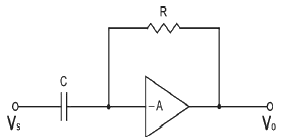
- 적분기
- 가산기
- 미분기
- 부호변환기
(정답률: 88%)
9. 다음 회로에서 두 개의 FET가 동일할 때 전압 이득은? (단, μ=100, rd=10[kΩ])
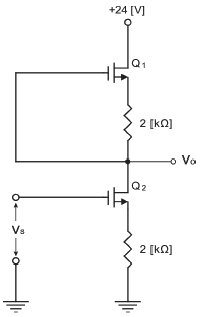
- -50
- -100
- 50
- 100
(정답률: 54%)
10. 다음 그림과 같은 귀환회로에서 전압 증폭도 AFB를
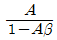
라 하면 부귀환 작용을 할 수 있는 조건?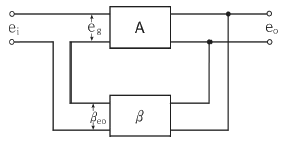
- ｜1-Aβ｜ ＜ 1
- ｜1-Aβ｜ ＞ 1
- Aβ = 1
- Aβ = 0
(정답률: 74%)
11. 그림과 같은 필터 회로에서 리플 함유율을 작게 하는 방법으로 틀린 것은?
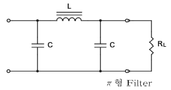
- L을 크게 한다.
- C를 크게 한다.
- 주파수를 낮게 한다.
- RL을 크게 한다.
(정답률: 75%)
12. JFET의 포화영역에서 드레인 전류(IDS)를 나타내는 식으로 가장 적합한 것은? (단, IDSS : VGS = 0일 때 그레인 전류, Vp : 핀치오프 전압이다.)
- IDS = IDSS
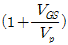
- IDS = IDSS
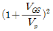
- IDS = IDSS
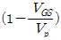
- IDS = IDSS
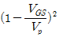
(정답률: 67%)
13. 발진회로의 특성에 대한 설명으로 틀린 것은?
- 정귀환을 이용한다.
- 입력 신호가 필요 없다.
- 귀환 루프의 이득이 0이다.
- 바크하우젠의 발진 조건은 ｜βA｜=1이다.
(정답률: 62%)
14. 비안정 멀티바이브레이터 회로에서 아래의 조건과 같을 때, 반복주기는 얼마인가? (단, C1=C2=0.4[μF], Rc1=Rc=20[kΩ], RB1=RB2=150[kΩ]이다.)
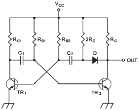
- 11.1[ms]
- 28[ms]
- 47.2[ms]
- 83.2[ms]
(정답률: 62%)
15. 부저항(Negative Resistance) 특성을 가진 다이오드는?
- 쇼트키 다이오드
- 터널 다이오드
- 레이저 다이오드
- 제너 다이오드
(정답률: 74%)
16. 다음 회로에서 전류 I의 최대치(peak) 값은? (단, 다이오드 순방향 저항 20[Ω], Vi의 실효치 110[V]이다.)(오류 신고가 접수된 문제입니다. 반드시 정답과 해설을 확인하시기 바랍니다.)
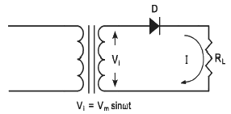
- 153[mA]
- 83[mA]
- 64[mA]
- 42[mA]
(정답률: 63%)
17. A급 전력증폭기에 대한 설명으로 틀린 것은?
- 왜율이 작고, 효율이 나쁘다.
- 저주파 증폭기, 완충 증폭기에 사용된다.
- 출력전류가 입력의 반주기에 걸쳐서 흐른다.
- 유통각은 360도이다.
(정답률: 62%)
18. 회로에 대한 설명으로 틀린 것은?
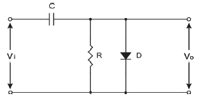
- 입력전압이 E 만큼 상승하는 동안 다이오드가 도통하여 RC의 짧은 시간동안 콘덴서 C를 충전한다.
- 입력전압이 E 만큼 하강하는 동안 다이오드는 개방되어 콘덴서 C의 전하는 R을 통하여 방전된다.
- 방전의 시정수가 크면, 출력의 상부가 E[V]로 일정하게 유지되는 정 클램퍼 회로이다.
- 다이오드의 순방향 저항 Rf, 역방향 저항 Rb라고 하면 Rf = R = Rb가 되어야 한다.
(정답률: 56%)
19. 다음 회로에서 R1=R2=R3=R4는 10[kΩ], V1은 6[V], V2는 8.2[V]일 때 V0는?
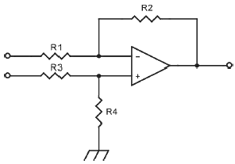
- 14.2[V]
- 2.2[V]
- -2.2[V]
- -14.2[V]
(정답률: 66%)
20. 60[Hz], 3상 전파 정류회로에서 생기는 맥동주파수는?
- 60[Hz]
- 120[Hz]
- 180[Hz]
- 360[Hz]
(정답률: 72%)
2과목: 전기자기학 및 회로이론
21. Q1[C]으로 대전된 C1[F]의 콘덴서에 용량 C2[F]를 병렬 연결하면 C2가 분배 받는 전기량[C]은?
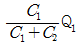
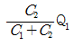
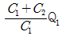
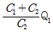
(정답률: 66%)
22. 서로 같은 방향으로 전류가 흐르고 있는 나란한 두 도선 사이에 작용하는 힘은?
- 회전력
- 반발력
- 정전력
- 흡인력
(정답률: 74%)
23. 내구의 반지름 10[cm], 외구의 반지름 20[cm]인 동심 도체구의 정전용량은 몇 [pF]인가?
- 16
- 18
- 20
- 22
(정답률: 51%)
24. 동심구의 각 반지름이 a = 0.1[m], b = 0.15[m], c = 0.16[m]인 경우, 내구에 100[V]를 가하고 외구를 영전위로 하였다. 여기에 축적되는 에너지는 몇 J 인가?
- 1.67 × 10-7
- 1.67 × 10-8
- 1.67 × 10-9
- 1.67 × 10-10
(정답률: 64%)
25. 전류에 의한 자계의 방향을 결정하는 법칙은?
- 렌츠의 법칙
- 플레밍의 오른손 법칙
- 암페어의 오른나사 법칙
- 패러데이의 전자유도 법칙
(정답률: 62%)
26. 포아송의 방정식으로 옳은 것은?
- ∇2V =
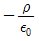
- ∇·E =
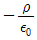
- ∇2V = 0
- E = -∇V
(정답률: 58%)
27. 수평 전파는 무엇인가?
- 대지에 대해서 전계가 수직면에 있는 전자파
- 대지에 대해서 전계가 수평면에 있는 전자파
- 대지에 대해서 자계가 수직면에 있는 전자파
- 대지에 대해서 자계가 수평면에 있는 전자파
(정답률: 71%)
28. 자계에 있어서의 자화의 세기 J[Wb/m2]는 유전체에서의 무엇과 동일한 의미를 가지고 대응되는가?
- 전속 밀도
- 전계의 세기
- 전기분극도
- 전위
(정답률: 53%)
29. 자계 중에서 이것과 직각으로 놓인 도체에 I[A]의 전류를 흘릴 때, F[N]의 힘이 작용하였다. 이 도체를 v[m/s]의 속도로 자계와 직각으로 운동시킬 때의 기전역 e[V]는?
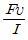
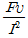
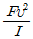
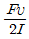
(정답률: 55%)
30. 50[V/m]인 평등 전계 중에 80[V]되는 A점에서 전계방향으로 0.8[m] 떨어진 B점의 전위는 몇 [V] 인가?
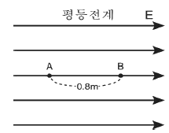
- 20
- 40
- 60
- 80
(정답률: 65%)
31. 다음 파형의 라플라스 변환은? (단, E와 T는 상수이고,
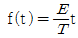
이다.)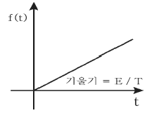
- E / s
- E / s2
- E / Ts
- E / Ts2
(정답률: 68%)
32. 콘덴서 양단에 걸리는 전압은 회로에 흐르는 전류를 기준으로 어느 정도의 위상을 갖는가?
- 90°
- -90°
- 180°
- -180°
(정답률: 58%)
33. 전송 파라미터(ABCD)에서 어드미턴스의 성질을 갖는 상수는?
- A
- B
- C
- D
(정답률: 73%)
34. 다음 그림 중에서 상호 인덕턴스 M이 부(-)인것은?
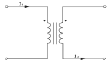
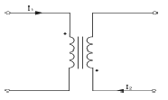
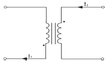
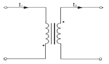
(정답률: 71%)
35. 정 K형 여파기(constant K-type filter)에 있어서 임피던스 Z1, Z2는 어떻게 나타내는가? (단, K는 공칭 임피던스라 한다.)
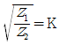
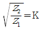
- Z1Z2=K2
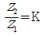
(정답률: 80%)
36. 다음 회로에서 역률을 구하면 얼마인가?
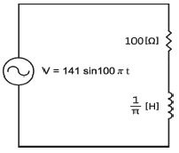
- 1
- 1/2
- 1/√2
- 1/√3
(정답률: 63%)
37. RLC 병렬 회로에 대한 설명으로 옳은 것은?
- 저항값이 증가하면 대역폭은 감소한다.
- 저항값이 증가하면 대역폭은 일정하다.
- 저항값이 증가하면 대역폭은 증가한다.
- 저항값이 증가하면 대역폭은 증가와 감소를 반복한다.
(정답률: 59%)
38. 부하저항 RL에 걸리는 전압은 몇 [V] 인가?(오류 신고가 접수된 문제입니다. 반드시 정답과 해설을 확인하시기 바랍니다.)
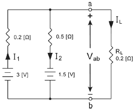
- 1
- 2
- 3
- 4
(정답률: 40%)
39. 50[μF]의 콘덴서에 100[V], 60[Hz]의 교류전압을 가할 때의 무효 전력[Var]은?
- 40π
- 60π
- 120π
- 240π
(정답률: 63%)
40. 회로에서 t = 0일 때, 스위치를 닫는다면 초기 전류 i(t)t=0의 값은? (단, 콘덴서의 초기 전하는 0 이다.)
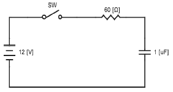
- 12[mA]
- 60[mA]
- 100[mA]
- 200[mA]
(정답률: 56%)
3과목: 전자계산기일반
41. 어떤 명령이 실행되기 위해서 가장 먼저 이루어지는 마이크로 오퍼레이션은?
- IR → MAR
- PC → MAR
- PC → MBR
- PC + 1 → PC
(정답률: 83%)
42. 다음 중 목적 프로그램을 시스템 라이브러리와 연결시켜 실행 가능한 모듈로 생성해 주는 역할을 하는 것은?
- Linker
- Loader
- Debugger
- Assembler
(정답률: 81%)
43. 0101000-1101101의 2진수 뺄셈 연산을 2의 보수를 이용하여 계산하면 10진수로 얼마인가?
- -49
- -59
- -69
- -79
(정답률: 73%)
44. 10진수 -68을 2의 보수의 표현으로 8bit로 올바르게 표현한 것은?
- 11000100
- 11100011
- 10111100
- 10101100
(정답률: 56%)
45. 컴퓨터 내부에서 연산의 증감결과를 임시적으로 기억하거나 데이터의 내용을 이송할 목적으로 사용되는 일시 기억장치는?
- Register
- Buffer
- I/O unit
- ROM
(정답률: 64%)
46. 컴퓨터에서 중앙처리장치가 메모리에 1회 접근하여 자료를 처리하는 데 걸리는 시간을 나타내는 용어는?
- 인출 사이클(fetch cycle)
- 실행 사이클(execution cycle)
- 기계 사이클(machine cycle)
- 액세서 타임(access time)
(정답률: 54%)
47. 8비트에 BCD 코드 2개의 숫자를 표현하는 방법으로 기억장치의 공간 이용도를 높일 수 있어 주로 10진수 연산에 사용되는 것은?
- 부동 소수점 형식
- 팩 10진수 형식
- 언팩 10진수 형식
- 8진 데이터 형식
(정답률: 79%)
48. 다음 중 컴퓨터에서 interrupt가 발생하면 가장 먼저 취하는 것은?
- 모든 동작을 중단한다.
- 즉시 interrupt 문으로 jump 한다.
- 현재의 명령을 끝내고 현재 상태를 보관한다.
- 어떤 장치가 요청하였는지 조사한다.
(정답률: 77%)
49. 묵시적 주소지정 방식에서 산술 연산을 실행하는데 사용되는 레지스터는?
- 누산기
- 데이터 레지스터
- 주소 레지스터
- 인덱스 레지스터
(정답률: 73%)
50. 정렬(Sort)하는 기호로 한 항목의 어떤 집합을 특정 순서로 바꾸어 놓는 것을 의미하는 기호는?
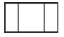
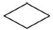
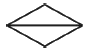
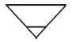
(정답률: 69%)
51. 다음 중 인터프리터 언어는?
- FORTRAN
- COBOL
- BASIC
- PASCAL
(정답률: 69%)
52. 프로그램의 코딩 과정을 정확하게 설명한 것은?
- 템플리트를 이용하여 프로그램의 논리를 그리는 것
- 각 흐름도 연산을 컴퓨터 언어로 번역하는 것
- 흐름도 연산을 의사 코드로 바꾸는 것
- 기계어를 의사 코드로 바꾸는 것
(정답률: 74%)
53. 다음 그림은 반가산기의 기호이다. 입력 A = 1, B = 1인 경우 출력 S, C의 값은?
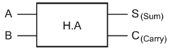
- S = 0, C = 0
- S = 0, C = 1
- S = 1, C = 0
- S = 1, C = 1
(정답률: 76%)
54. 기억장치의 100번지에는 200이 저장되어 있고, 200번지에는 300이 저장되어 있는 경우 다음 명령이 즉치 주소지정방식인 경우와 간접 주소지정방식인 경우 실제 데이터 값은?
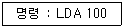
- 100, 200
- 200, 300
- 100, 300
- 200, 100
(정답률: 67%)
55. 다음 기억장치 중에서 refresh를 필요로 하는 것은?
- SRAM
- DRAM
- ROM
- PROM
(정답률: 72%)
56. 다음 중 폰 노이만(Von Neumann)형 컴퓨터의 특성이 아닌 것은?
- 주기억장치 구조가 1차원으로 구성되어 있다.
- 기본적으로 명령어를 수행하는 것이 순차적이다.
- 연산의 의미가 데이터에 있다.
- 프로그램 내장 방식이다.
(정답률: 70%)
57. 마이크로프로세서의 구성 부분 중 산술 연산이나 논리 연산을 행하는 곳은?
- 연산 회로
- 레지스터
- 제어 회로
- 기억장치
(정답률: 83%)
58. 다음 중 C 언어의 scanf( ) 함수에 대한 설명으로 잘못된 것은?
- 표준 입력 함수이다.
- 배열명은 일반 변수를 인수로 사용하는 것과 동일하게 사용한다.
- 입력되는 문자수를 제어할 수 있다.
- 제어문자는 printf( )와 동일하게 사용된다.
(정답률: 62%)
59. 다음의 연산에서 비수치적 연산이 아닌 것은?
- 고정 소수점 연산
- MOVE
- SHIFT
- ROTATE
(정답률: 63%)
60. 디코더(Decoder)의 입력이 3개일 때 출력은 보통 몇 개인가?
- 1개
- 2개
- 8개
- 16개
(정답률: 42%)
4과목: 전자계측
61. 전압계와 전류계를 그림과 같이 접속하여 부하전력을 측정하였을 때 100[V], 1[A]가 나타날 경우에 부하전력은? (단, 전압계의 저항은 1000[Ω] 이다.)
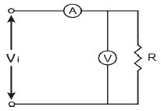
- 80[W]
- 110[W]
- 100[W]
- 90[W]
(정답률: 54%)
62. 주파수 계수기의 구성요소 중 게이트 회로 다음에 무슨 회로가 첨부되는가?
- 표시 회로
- 증폭 회로
- 계수 회로
- 게이트 제어회로
(정답률: 66%)
63. 싱크로스코프의 수평편향판 간에 EH, 수직평향판 간에 EV인 정현파 전압을 각각 인가시켜 나타나는 리사쥬(Lissajous) 도형은? (단, EH=Emsin(ωt -
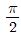
), EV=Emsinωt 이다.)- 타원
- 원
- 직선
- 8자 모양
(정답률: 75%)
64. 보간 발진기법에 의한 고주파 측정에서 f1 = 1.2[MHz], f2 = 1.8[MHz]일 때 미지 주파수 fx는 얼마인가?
- 2.16[MHz]
- 0.6[MHz]
- 1.2[MHz]
- 3.6[MHz]
(정답률: 55%)
65. 오실로스코프의 동기방법으로 틀린 것은?
- 트리거 동기
- 외부 동기
- 전원 동기
- 내부 동기
(정답률: 61%)
66. 다음 기호의 계기는 교류용이며 고주파에 사용할 경우에 어떤 형의 계기로 사용하면 되는가?
- 열전대형
- 진동편형
- 정류형
- 정전형
(정답률: 68%)
67. 유도형 적산전력계의 구성요소가 아닌 것은?
- 온도보상 장치
- 회전부분을 회전수에 비례하여 제동하는 장치
- 계량 장치
- 전력에 비례하는 회전력을 발생하는 장치
(정답률: 73%)
68. 60[Hz]의 전압을 오실로스코프로 측정할 때 주기는 약 얼마인가?
- 60[s]
- 1[s]
- 60[ms]
- 16.6[ms]
(정답률: 69%)
69. 다음 내용에서 설명하는 소자는 무엇인가? (단, T = 금속의 온도, Tref = 개방된 쪽의 온도이다.)
- 열전 소자
- 열전대
- 주물합금
- 초전도물질
(정답률: 77%)
70. 오실로스코프를 사용하여 측정이 불가능한 것은?
- 전압
- coil Q
- 주파수
- 변조도
(정답률: 85%)
71. 펄스의 주파수 500[Hz], 펄스폭 1[㎲]인 펄스의 충격계수(Duty Cycle) D는?
- 0.0⑤
- 0.00⑤
- 0.001
- 0.0001
(정답률: 63%)
72. 교류용(상용 주파수) 검류계로 가장 많이 사용되는 것은?
- 전류력계형 검류계
- 가동코일형 검류계
- 진동 검류계
- 중력 검류계
(정답률: 38%)
73. 전하량을 측정하는 단위로 옳은 것은?
- C(Coulomb)
- V(Volt)
- F(Farad)
- R(Ohm_
(정답률: 82%)
74. 오실로스코프를 사용하여 수직입력에 미지 주파수를 수평입력에 1000[Hz]의 신호를 가했더니 그림과 같은 리사쥬(Lissajous) 도형이 얻어졌을 때 미지 주파수는?(오류 신고가 접수된 문제입니다. 반드시 정답과 해설을 확인하시기 바랍니다.)
- 500[Hz]
- 1000[Hz]
- 2000[Hz]
- 3000[Hz]
(정답률: 64%)
75. 헤테로다인 주파수계로 주파수를 측정하는 경우 주파수계를 피측정 회로에 밀 결합을 하지 않는 이유는?
- 측정 오차가 생기거나 또는 인입 현상이 발생하기 때문
- 측정기에 무리를 주기 때문
- 영(Zero) 비트점의 검출이 용이하기 때문
- 다이얼의 눈금과 발진 주파수가 일치하지 않기 때문
(정답률: 63%)
76. 직사각형파 펄스를 가하여 저주파 특성을 측정하는 경우 이득이 낮은 주파수에서 감소하는 출력 파형은?
(정답률: 67%)
77. 계수형 주파수계로 측정할 수 없는 것은?
- 주기 측정
- 고주파 진폭
- 분주비
- 주파수 측정
(정답률: 70%)
78. 잡음에 대한 설명으로 틀린 것은?
- AC 전원 도선이나 계기 결선과 같은 금속 도체를 통하여 회로에 반입되는 잡음을 전도 잡음(conducted noise)이라 한다.
- 전류를 운반하는 자유전자의 열적 동요로 야기되는 잡음을 존슨 잡음(Johnson noise)이라 한다.
- 내부 잡음이 없는 경우의 이상적인 잡음지수는 0이다.
- 전기나 전자회로에서 필요한 전류, 전압 외의 신호를 말한다.
(정답률: 66%)
79. 휘트스톤 브리지 저항 측정 회로에서 저항 X는?(오류 신고가 접수된 문제입니다. 반드시 정답과 해설을 확인하시기 바랍니다.)
- X = (Q/P)·R
- X = (P/Q)·R
- X = R/(PQ)
- X = Q/(PR)
(정답률: 61%)
80. 다음 중 디지털 전압계에 속하지 않는 것은?
- 적산형(integrating)
- 계단 램프형(staircase-ramp)
- 연속 접근형(successive-approximation)
- 연속 불평형형(continuous-unbalance)
(정답률: 71%)
따라서, 입력 A와 B가 모두 1일 때 AND 게이트의 출력이 1이 되고, 입력 C와 D 중에 하나 이상이 1일 때 OR 게이트의 출력이 1이 됩니다. 이 두 출력이 다시 AND 게이트의 입력으로 들어가므로, AND 게이트의 출력은 입력 A, B, C, D 중에서 A와 B가 모두 1이고, C와 D 중에 하나 이상이 1인 경우에만 1이 됩니다.
이를 논리식으로 나타내면 (A AND B) AND (C OR D)가 됩니다. 이 식을 간소화하면 (A AND B AND C) OR (A AND B AND D)가 됩니다. 따라서, ""가 정답이 됩니다.